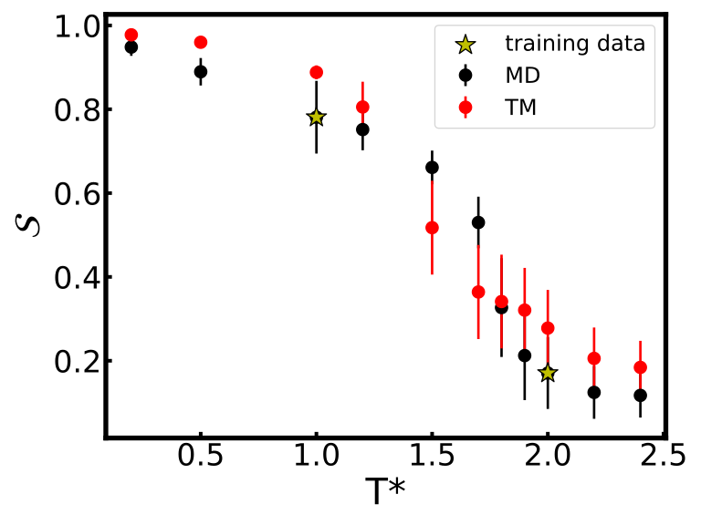

Generative Machine Learning the Isotropic-Nematic Phase Transition
My final project in Pratyush Tiwary's group at UMD involved the use of a specific type of generative machine learning model
called thermodynamic maps to infer the critical behavior of a model anisotropic, condensed matter system: a melt of
Gay-Berne (GB) ellipsoids. This analytical potential serves as essentially the simplest model for rod-like liquid crystalline systems.
In the study, we use the aforementioned thermodynamic maps approach, which is a type of score-based generative model,
to map the phase behavior along the one-dimensional nematic order parameter between two training points on either side of the isotropic-nematic critical point. With no prior information collected
at the critical point, we are able to infer with accuracy the scaling laws at the critical point. This approach can save a lot of computational resources by inferring critical
behavior by training the model on just two sample points, one on each side of the phase transition. However, this points must be choosen so that they are not too far away from the crtitical
point, else the model will not have the information required to "fill in" the behavior near criticality. It also remains to be seen whether or not this approach can be extrapolated to
more complicated phase transitions with a more complicated set of input features (here we use only the relative orientations of the ellipsoids...things will be more complicated for e.g.
the formation of a condensate from many intrinsically disordered proteins).

Figure 1. One dimensional phase diagram for a melt of Gay-Berne ellipsoids as predicted by molecular dynamics (MD) simulations (black) or the thermodynamic maps (TM) approach (red).
Stars indicate the MD samples used to train the TM model; TM points at all reduced temperatures T* are generated by the trained model.